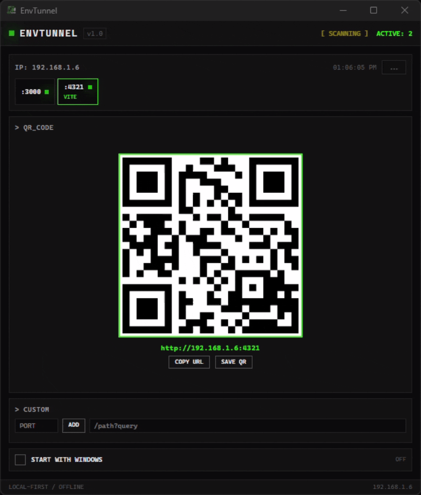

EnvTunnel sits in your system tray, scans 16+ dev ports every 3 seconds, and generates a big QR code the moment it detects an active server. Scan it. Open it. Done.

Monitors 16+ popular dev ports every 3 seconds. Detects React, Vite, Astro, Next.js, Angular, Django, Flask and more instantly.
Generates a big scannable QR code using your real local network IP. No typing, no clipboard juggling. Just scan and open.
Recognizes Vite, Next.js, Astro, Nuxt, Gatsby, Angular, Django, Flask, Laravel, Rails and Express automatically.
In-app toast plus a native OS notification when a new server comes online - even if EnvTunnel is in the tray.
Add any port manually. Append custom paths like /admin or ?debug=true directly to the QR URL.
Minimizes to tray on close. Right-click for menu. Optional autostart on login. Windows, macOS, and Linux.
Windows, macOS, and Linux. Portable Windows build needs no installer.